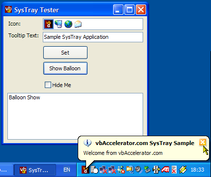

SysTray Code (54K)
SysTray Code (54K)
 Bugs: 0 / 0
Bugs: 0 / 0
 Issues: 0 / 0
Issues: 0 / 0
 Questions: 1 / 1
Questions: 1 / 1
 1 Nov 2003
1 Nov 2003
The previous version could leave an orphan icon in the SysTray if you changed a property which caused the Window handle to be recreated (for example, the ShowInTaskBar property. This is now fixed and the demonstration code shows how to ensure you stay in the SysTray in such a case by overriding OnHandleChanged.

SysTray from .NET
Add your application to the SysTray and use InfoTips for user notification
The .NET Framework includes a NotifyIcon component but this unfortunately doesn't support InfoTip (balloon) notification; at least, not in v1.0 of the Framework. This sample provides an equivalent class which uses the Shell code directly to allow all the tooltip facilities to be used.
Implementing SysTray Notifications
The SysTray is accessed through a single Shell API function, Shell_NotifyIcon which is well documented in the Platform SDK. This function is used to add and remove your application to the SysTray area and to set the icon, tooltip or balloon tip. Notifications of any events occuring in the SysTray icon are sent to your application's Window through a message you specify, where the LParam value of the message specifies which type of notification
Therefore to actually create an item in the SysTray you always need a Window to base it around. In this code, I've assume that you can use a Window that's part of your application to send the messages to, and then this is subclassed using the NativeWindow object. Remember you can always have a hidden form if your application has no other UI that's normally displayed: have a go with the Windows Enumeration sample and you'll see that there a plenty of other apps that do this!
About The Code
Using the SysTray class should be self-explanatory - the methods are all documented. For icons, you use an ImageList to act as the icon source and then you specify the IconIndex. You can optionally assign any object deriving from ContextMenu to the SysTray class, in which case the menu is automatically shown when the user right-clicks on the SysTray icon. Finally, use one of the ShowBalloonTip methods to show a pop-up balloon tip over your icon. There are a number of events you can respond to: for the tray itself there are mouse and key event handlers, and for the balloon tip there are Show, Hide, TimeOut and Clicked events.
You Were Only Meant To Blow The Bleedin' Doors Off
For your amusement, two classes are provided for some UI fun: the IconMenuLib file contains extensions to the ContextMenu and MainMenu objects to make them render in the VS.NET/Office XP style (although in this sample no icons are allocated), and the IconListBox file contains an extended ListBox which presents a horizontally aligned icon picker for any ImageList.